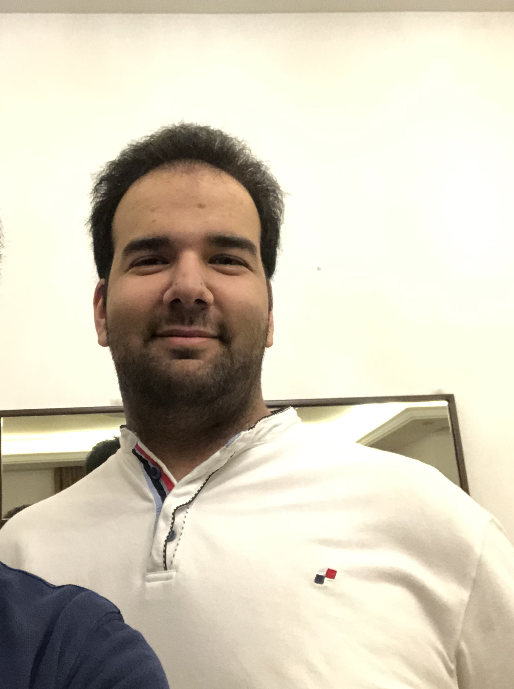
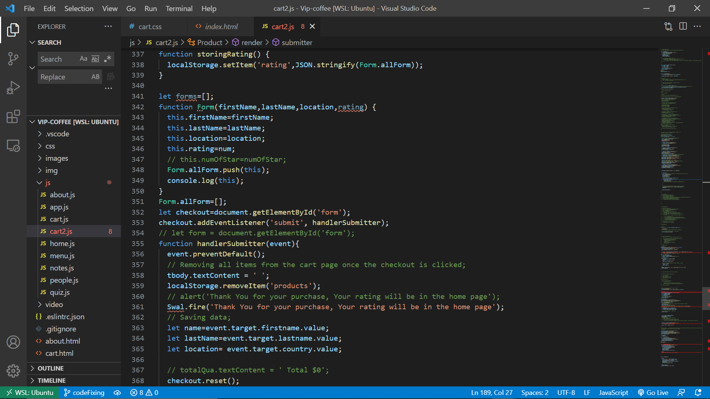

Intro
Hi everyone my name is Jamal Eldeen Wari I graduated from Arab Open University with a Computer Science degree. I really love coding a lot sometimes it can get confusing but the majority is funand welcome to my site where here i will share all of work with you i hope you will have fun looking around, if you like what you see here you can see my Accounts:
Personal Headline
Everybody in this industry will like to be successful as Bill Gates or Elon Musk that doesnt mean that i will be like them in the future but i will try to be as closely as possible to them which it will require a lot of years of experiance, so because of that i would like to start my career step by step. First step for my successful career is to enter a strong and well known bootcamp in the world as Code Fellows which is a dream come true for me because it will open for me a lot of opportunities either in Jordan or other countries. Second step is to find a job and improve myself in that company so i can get the needed skills to be promoted and that can happen only if a learn from the people around me and take their notes into consideration.
Professional Pitch
This is the first time seeing myself talking in a video but it was not bad i was expecting to be very hard in just took me few takes and it looks good for me. Here is a link for my
Tech industry
when i was a kid my father used to have a PC and i always feel satisfied when i see the Microsoft Windows startup screen when you first open the PC and i remeber myself looking at all the folders that are inside of the PC and the question that arises for me is that how can the computer do that and how can a computer know that this icon is different from another icon in the desktop and how games work. Because of that i decided after finishing high school to enter computer science in college to understand how the computer operates and how software and hardware are connected to each other.
Screen shots of my previous Projects
Vip-Coffee Cart.js
Busmall app.js
.png)
Cookie Stand app.js
.png)
.png)